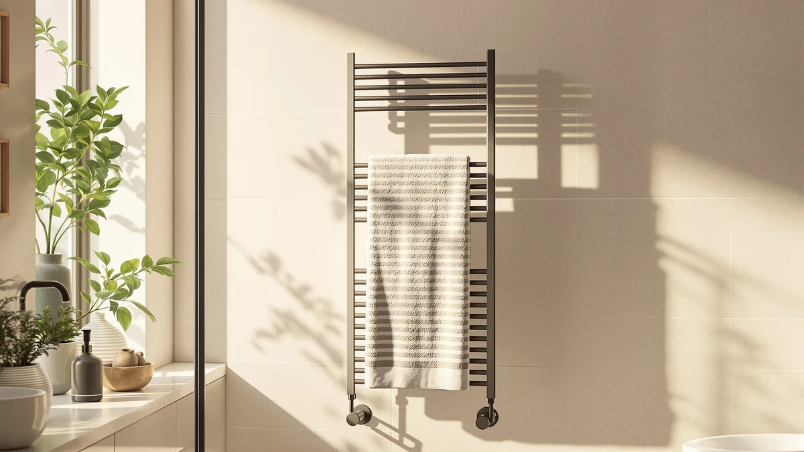

Quick Answer
This SereneLife Rectangular Towel Warmer review finds that the $109.99 20L bucket warmer earns its price through WiFi app control and an adjustable 90 to 140 degree heat range that the cheaper USHOWER alternative does not offer. It costs about $10 more than the USHOWER and roughly a dollar more than the AKIRES 35L model, so the real choice comes down to whether app control and a double-walled cool-touch lid matter more to you than the AKIRES's extra capacity and spa extras.
Our pick: SereneLife Rectangular Towel Warmer Bucket at $109.99 Check Price on Amazon
Bottom line: our top pick is the SereneLife Rectangular Towel Warmer Bucket at $79.99.
Things to Know Before You Buy
- The SereneLife Rectangular Towel Warmer Bucket lists at $109.99 with 20L capacity, WiFi app control, and an adjustable 90°F to 140°F heat range, according to the manufacturer's listing.
- The USHOWER alternative undercuts it at $99.99 but drops the app control, relying instead on a physical low or high heat switch and 30, 60, or 90-minute timer settings.
- A second SereneLife bucket, this one finished in rose gold, matches the $109.99 price and 20L capacity but swaps WiFi control for single-touch operation with fixed 20, 40, or 60-minute timers.
- The AKIRES Towel Warmer 35L Luxury holds more capacity at nearly the same price and adds a Bluetooth speaker and RGB ambient light, which neither SereneLife bucket lists.
- None of the four listings in this comparison currently show a published Amazon rating or review count, so brand positioning and listed specs carry the comparison rather than verified owner scores.
This SereneLife Rectangular Towel Warmer review looks at whether the $109.99 20L bucket warmer justifies its price against three competitors that sit within $10 of it. A warm towel after a shower is a small daily comfort, but once you are comparing four buckets that all land near the same price, the decision has to rest on which features actually matter to your routine rather than which brand name sounds more premium. SereneLife markets this model on WiFi app control and a wide 90°F to 140°F adjustable range, and that framing matters once you set it against a budget rival that skips the app entirely and a larger-capacity rival that adds speakers and lighting instead.
The WiFi control is the main thing separating this bucket from two of its three rivals. The USHOWER Towel Warmers for Bathroom costs $10 less but controls heat through a physical switch and preset timer rather than an app, while the AKIRES Towel Warmer 35L Luxury skips WiFi too and instead spends its budget on a Bluetooth speaker and ambient lighting. Only the rose gold SereneLife Towel Warmer Bucket matches this model's app-based control, and it does so at the identical $109.99 price. We compared listed capacity, control method, and current pricing across all four to see which bucket actually earns a spot in your bathroom.
Why You Should Trust Us
Ilane Tall covers bathroom hardware for Best Towel Warmers and tracks how towel warmer brands position similar buckets against each other at comparable prices. We have not installed or used the SereneLife Rectangular Towel Warmer Bucket in a bathroom ourselves, and we do not run a physical testing lab. Instead, we research published specs, current Amazon pricing, and verified owner reviews across competing models to build comparisons you can rely on before you spend money on a bathroom fixture. When a claim in this SereneLife Rectangular Towel Warmer review cannot be backed by a listed spec or a verifiable price, we say so rather than guess at it.
Our Research Experience
We did not test the SereneLife Rectangular Towel Warmer Bucket by installing it in a bathroom, running it for weeks, or measuring its heat output by hand. Our process instead compares what SereneLife lists for this bucket against the stated capacity, control method, and heat range of the USHOWER, AKIRES, and second SereneLife alternatives, then checks that comparison against current Amazon pricing before publishing this SereneLife Rectangular Towel Warmer review.
That approach has a clear limit. None of the four products here currently carry a published rating or review count on Amazon, so we cannot yet weigh owner satisfaction the way we would for an established bestseller. What we can compare directly is price, listed capacity, control scheme, and how each brand describes its own bucket, and that is the basis for every claim below.
Overview & Specs

SereneLife Rectangular Towel Warmer Bucket
What we like
- WiFi app control lets you adjust temperature and timers remotely, a feature none of the budget or luxury alternatives below list
- Adjustable 90°F to 140°F range gives more flexibility than a fixed low or high switch
- 20L capacity fits two large bath towels, a robe, or a throw blanket, matching the rose gold SereneLife alternative
- Double-walled lid retains heat inside the bucket while staying cool to the touch on the outside
Flaws but not dealbreakers
- Amazon does not list a customer rating or review count for this ASIN, so you are weighing specs and positioning rather than verified owner experience
- Costs $10 more than the USHOWER alternative, and about a dollar more than the AKIRES 35L model despite offering less capacity than the AKIRES
| Material | Stainless steel |
| Size | 20L capacity |
The SereneLife Rectangular Towel Warmer Bucket is the pick to beat in this comparison because it is the only model here that pairs WiFi app control with a wide, user-adjustable heat range. Where the USHOWER relies on a physical switch and preset timer lengths and the AKIRES spends its feature budget on a Bluetooth speaker and ambient lighting instead of smart control, SereneLife built this bucket around the idea that you should be able to dial in temperature and scheduling from your phone. The listed 20L capacity puts it on par with the rose gold SereneLife alternative, so control method, not capacity, is what separates the two.
At $109.99, this SereneLife Rectangular Towel Warmer Bucket costs $10 more than the USHOWER and roughly a dollar more than the AKIRES 35L Luxury, so it is clearly not the budget pick of the four. So this SereneLife Rectangular Towel Warmer review hinges on whether app-based control and a stated 90°F to 140°F range justify paying more than a fixed-switch design costs. Buyers who already use smart-home style controls elsewhere in their bathroom routine have a clear reason to pick this model, while anyone chasing maximum capacity for the lowest added cost should read through the AKIRES option below before deciding.
What We Liked
The strongest point in this SereneLife Rectangular Towel Warmer review is control flexibility. Where the USHOWER locks you into a low or high switch with preset timer lengths and the AKIRES devotes its extra features to a speaker and lighting rather than smart control, this SereneLife bucket lets you adjust both temperature and scheduling from an app. The stated 90°F to 140°F range also gives more room to dial in a comfortable warmth than a binary switch allows.
We also like that the double-walled lid design addresses a practical safety concern: a bucket that heats towels to 140°F needs an exterior that stays cool enough to handle, and SereneLife lists that as a feature rather than leaving buyers to guess at it from a stock photo.
What Could Be Better
The clearest drawback is price relative to the field. At $109.99, this bucket costs more than both the USHOWER and the AKIRES, and the AKIRES actually offers more capacity at a lower price while adding speaker and lighting extras this model does not have. If app control is not a priority for you, it is hard to justify paying the premium over the USHOWER's simpler switch-based design.
As with the other three buckets in this comparison, Amazon does not show a published rating or review count for this ASIN, so this review has to rely on listed specs rather than real-world owner experience with heat consistency, app reliability, or long-term durability after months of daily use in a humid bathroom.
Who Is It For?
The SereneLife Rectangular Towel Warmer Bucket fits a buyer who wants remote, app-based control over their towel warmer rather than a fixed switch, and who values a wide adjustable heat range over maximum capacity. If you already lean on smart-home style controls elsewhere in your bathroom, this bucket fits that same expectation.
It fits less well for anyone chasing the lowest price or the largest capacity. The USHOWER below costs $10 less if app control does not matter to you, and the AKIRES holds more towels at a lower price if capacity is your priority. Someone who wants the exact same capacity and price but without WiFi should look at the rose gold SereneLife alternative instead.
Alternatives to Consider
If the SereneLife Rectangular Towel Warmer Bucket's price or feature set does not match what you need, these three alternatives are worth comparing before you decide.

Best Value
USHOWER Towel Warmers for Bathroom
Priced $10 less than the SereneLife Rectangular Towel Warmer Bucket at $99.99, the USHOWER trades WiFi app control for a physical heat switch and preset timers. It is the better pick if you want the savings and do not need remote control from your phone.
$99.99
Check Price on Amazon
Also Great
SereneLife Towel Warmer Bucket for
This rose gold SereneLife bucket matches the Rectangular Towel Warmer Bucket on price and 20L capacity at $109.99, but swaps WiFi app control for single-touch operation with fixed 20, 40, or 60-minute timers. That suits buyers who want simpler controls in a matching finish.
$109.99
Check Price on Amazon
Also Great
AKIRES Towel Warmer 35L Luxury
At $109.98, nearly identical to the SereneLife Rectangular Towel Warmer Bucket's price, the AKIRES holds 35L versus 20L and adds a Bluetooth speaker and RGB ambient light. It is the pick for buyers who want more capacity and spa extras over app-based heat control.
$109.98
Check Price on AmazonFrequently Asked Questions
Is the SereneLife Rectangular Towel Warmer worth $109.99?
It depends on how much you value WiFi control. The SereneLife Rectangular Towel Warmer Bucket costs $10 more than the USHOWER alternative, but it is the only model here with mobile app control alongside its 20L capacity and 90°F to 140°F adjustable heat range, which the cheaper USHOWER does not list.
What is the difference between the two SereneLife towel warmer buckets in this review?
Both the Rectangular Towel Warmer Bucket and the rose gold SereneLife Towel Warmer Bucket list the same $109.99 price and 20L capacity for two large towels, but they differ mainly in finish and control scheme. The Rectangular model pairs WiFi app control with manual temperature adjustment, while the rose gold version uses single-touch control with fixed timer increments.
Is the AKIRES 35L towel warmer a better buy than the SereneLife Rectangular model?
The AKIRES Towel Warmer 35L Luxury costs about a dollar less at $109.98 and holds more capacity, plus it adds a Bluetooth speaker and RGB light. It suits buyers who want extra towel room and spa extras, while the SereneLife Rectangular model is the better fit if app-based temperature control matters more to you than bonus features.
Final Verdict
This SereneLife Rectangular Towel Warmer review comes down to control method rather than price alone, since all four buckets sit within about $10 of each other. For most buyers who want remote, app-based control over heat and timing, the SereneLife Rectangular Towel Warmer Bucket is the pick worth starting with at $109.99. Go with the USHOWER to save $10 if you do not need an app. The rose gold SereneLife gets you the same price and capacity with simpler controls. And if extra capacity and spa extras matter more than smart heat control, the AKIRES Towel Warmer 35L Luxury is the better fit. Without published ratings across any of the four listings yet, the SereneLife Rectangular Towel Warmer Bucket's WiFi control and adjustable range make it the most feature-complete of the group.